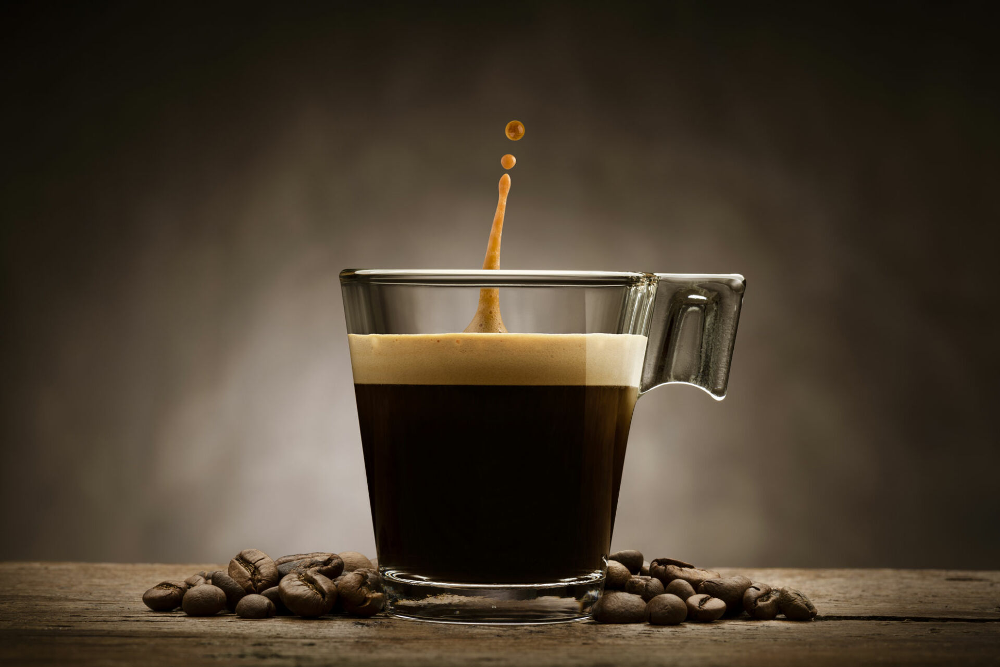
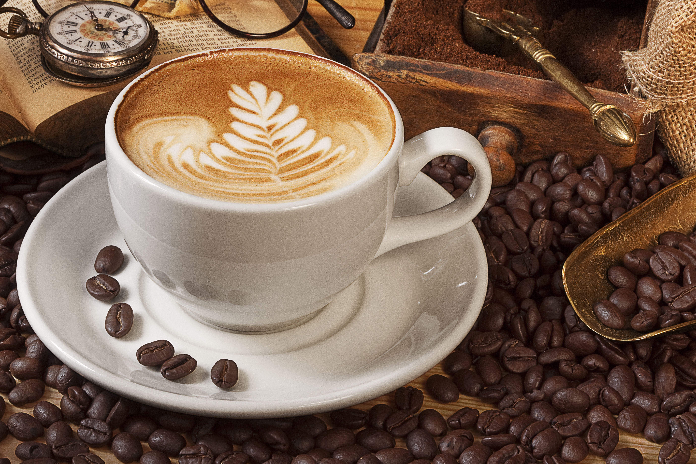
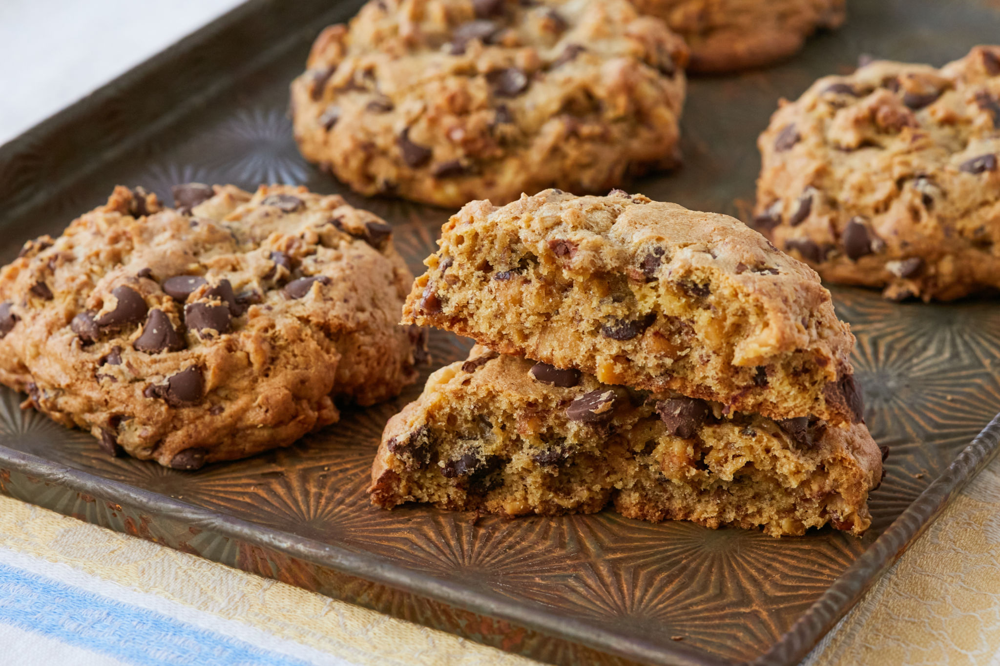

|  |
Caffè Arabica Intenso:Una miscela esotica di chicchi di caffè Arabica provenienti dalle alture delle montagne, tostati con maestria per offrire un gusto intenso e avvolgente. Il suo aroma ricco e avvolgente cattura i sensi, mentre il sapore profondo e robusto del caffè soddisfa ogni palato desideroso di un'esperienza autentica. |
|  |
Cappuccino Vellutato:Una combinazione armoniosa di espresso italiano perfettamente estratto e schiuma di latte vaporizzato al punto giusto, realizzando un capolavoro cremoso e vellutato. Il contrasto tra la ricchezza del caffè e la dolcezza del latte crea un equilibrio perfetto, mentre la consistenza morbida e cremosa soddisfa i desideri di chiunque cerchi un momento di puro piacere. |
|  |
Biscotti di Pasticceria Artigianale:Un'esplosione di gusto in ogni morso, i nostri biscotti di pasticceria sono realizzati con ingredienti selezionati con cura e una ricetta tramandata di generazione in generazione. Croccanti all'esterno e morbidi all'interno, questi dolci delizieranno i vostri sensi con una varietà di sapori, dalle classiche sfumature di vaniglia e cioccolato ai profumi avvolgenti di cannella e mandorle. Perfetti da gustare con il vostro caffè o cappuccino preferito, questi biscotti sono l'ideale accompagnamento per un momento di relax e indulgenza. |